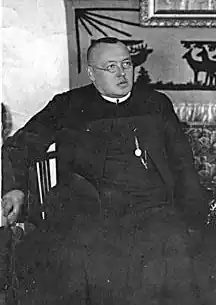

Ільдефонсо Бобич — ксьондз, один із зачинателів білоруської християнського руху та засновників БХД, редактор "Білорус", доктор філософії, який публікувався під псевдонім "Петро Простий".
Народився Ільдефонсо Бобич 10 січня 1890 року в Селянська сім'ї в селі Дедінка Друйского волості Віленської губернії (сьогодні Міорський район Вітебська області). У 1909 році закінчив гімназію в Ковно і поступив в Віленський духовна католицька семінарію, де приєднався до білоруського співтовариство.
З 1912 року навчався в Римі, отримав Ступінь доктора філософії. На аудієнції з Папою Пієм Х отримав його благословення для читачів першого білоруського християнського журналу "Беларус". Був висвячений на священика 15 липня 1915 року. Брав участь в знаменитих з'їзду білоруських католицьких священиків в Мінську 24-25 травня 1917 року, де була заснована Білоруське Християнська-демократичної Об'єднання. Пастирську діяльність почав на батьківщині, в Друей і на Дісненщіне в 1917-1920 роках. У 1921-1923 роках був учителем Закону Божого в Віленської білоруської гімназії. Від тисяча дев'ятсот двадцять три до 1930 року — настоятель в Германович. Після був переведений настоятелем і Декан в Ивье. Друкувався в хадецкой пресі під псевдо "Петро Простий". Після того, як польська церковна Ієрархія заборонила ксьондз належати до БХД і виписувати "Джерело", відійшов від суспільно-політичної діяльності. У 1942-му був заарештований німецькою владою і до 1944 року містився в місцевій в'язниці. Підірвав там здоров'я і, звільнений, 28 квітня 1944 помер. Поховані Ільдефонсо Бобич близько Петропавлівського костелу в Ивье. Павло Северинець, за матеріалами вікіпедії, інтернету і книги Ю. Гарбінского